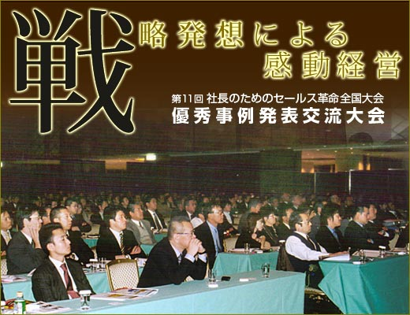
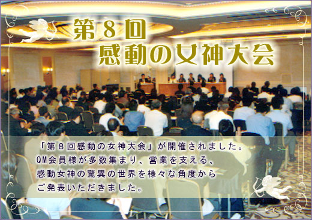
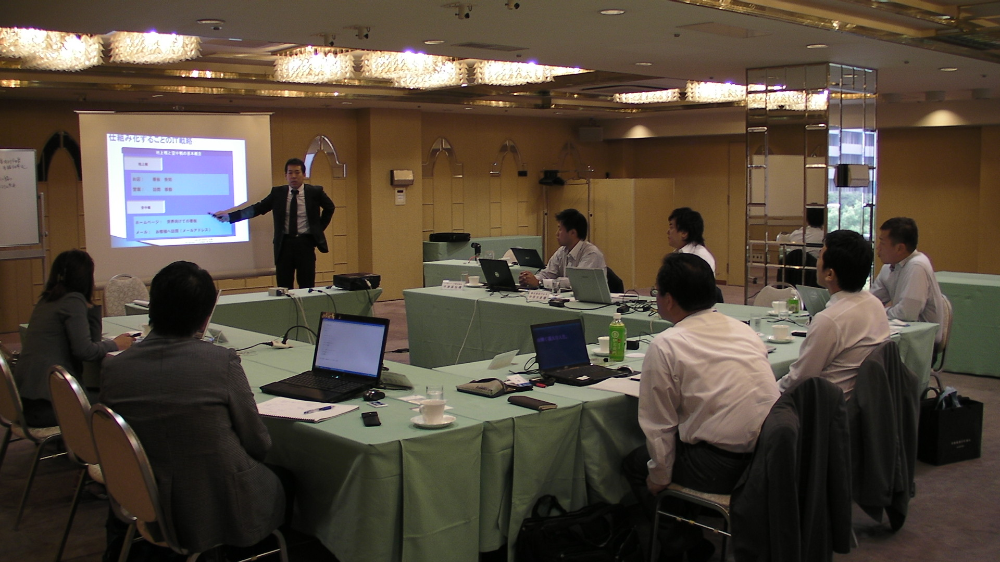

私たちは評論家ではありません。自ら経営し、自ら売上をつくってきた当事者です。その実績の一部をご紹介します。
感動セールス・タイムマネジメント・AI営業DXがもたらした変化の一例です。
感動マネジメント営業研修を導入。現場に一緒に入り、トークと提案を磨いた結果、成約率と売上が大きく向上。
営業チームを根本から再設計。経営者経験者ならではの現場感で、新規開拓力を底上げ。
業務の見直しと仕組み化で、ムダなコストを継続的に削減。利益体質へ転換。
タイムマネジメントで時間を創造し、意思決定のスピードを抜本的に改善。
2012年、世界同時バク転でギネス世界記録を達成。「やると決めたらとことん極める」の象徴。
2016年、ニューヨークに飲食店「寿海」をオープン。海外でも通用する事業づくり。
2020年、逆境のなか過去最高益を達成。その後M&A・PMIまで完遂。
数百名規模の全国大会から、少人数の経営研究会まで。感動が、会場を動かしてきました。



「失敗も成功も知っている人の言葉は重さが違う。本物の名参謀です。」
「意思決定の速度が体感で3倍になっています。」
※ 実名・社名・お写真の掲載は、許諾を得たうえで順次追加します。